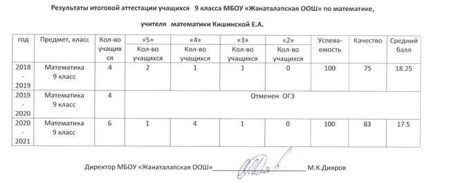

Моя
педагогическая деятельность – это практика, содержащая в себе элементы
творчества, современных педагогических технологий и индивидуальности, но цель
этой работы одна: создать ситуацию успеха для обучающихся с различным уровнем
владения учебным материалом.
Контакты
Мой
е-mail: kischinckaja.elena@mail.ru
Добро пожаловать
на мой сайт!
Мои персональные данные:
Кишинская Елена
Анатольевна
учитель математики
первой квалификационной
категории
МБОУ
«Жанаталапская ООШ» Беляевского района
Оренбургской
области
Фото на сайте размещается с согласия учеников и
родителей.
Портфолио
Общие сведения
Фамилия, имя,отчество: Кишинская Елена Анатольевна
Год и место рождения: 01.01.1967 г., Оренбургская область,
Беляевский район, с.Бурлык
Образование: высшее
1973-1983 гг. – Бурлыкская средняя школа
1983-1988 гг. –Оренбургский государственный педагогический
институт им. В.П.Чкалова
Специальность: физика и математика.
Квалификация: учитель средней школы
Место работы: с 1988г.-1997г –МБОУ «Хрсоновская ООШ» Беляевского
района, Оренбургской области
1997-2002гг –МБОУ «Беляевская СОШ»
Беляевского района, Оренбургской области
2013г и по сей день МБОУ «Жанталапская ООШ»
Беляевского района, Оренбургской области
Должность: учитель математики
Квалификационная категория: первая от 22.01.2017г
Протокол №
Награды:
- Благодарность за участие в проведении и проверке Всероссийских
проверочных работ ВПР –весна 2018, 2018г.(Московский центр непрерывного
математического образования)
- Диплом за организацию сверхпрограммной общероссийской олимпиады
Олимпус осенняя сессия, 2019г(Международные образовательные конкурсы
учеников 1-11 класс)
- Грамота за значительные успехи в организации и совершенствования
учебного и воспитательного процессов, формировании интеллектуального
культурного и нравственного развития личности, 2019г (Отдел образования,
опеки и попечительства администрации муниципального образования
Беляевский район).
- Благодарственное письмо за участие в конкурсе «Великая победа»,
2020г (Отдел образования, опеки и попечительства администрации
муниципального образования Беляевский район Беляевская районная организация
Оренбургской областной общественной организации Профсоюза работников
народного образования и науки РФ).
- Благодарность главы района за заслуги в воспитании детей, большой
вклад в сохранение семейных и духовных ценностей, успехи в трудовой
деятельности, активную жизненную позицию , 2021г
- Грамота за успехи в организации и совершенствования учебного и
воспитательного процессов, формировании интеллектуального культурного и
нравственного развития личности, 2021г (Отдел образования, опеки и
попечительства администрации муниципального образования Беляевский район).
Повышение
квалификации
1. 2016 г. –
ФГБОУ ВО ОГУ «Актуальные проблемы теории и методики преподавания математики:
избранные задачи и основные трудности » (72 ч.);
- Сертификат о прохождении диагностики педагогических компетенций
https://e7n-large.s3.yandex.net/static/education/taas/certificates/c86edbf4-90d2-4e80-a47f-c329fa9c2658/0/1585030695951.pdf
- Сертификат о проведение мотивирующего урока «Письма к деду»
https://e.mail.ru/attach/16387895790406332882/0%3B1/?folder-id=0&x-email=kischinckaja.elena%40mail.ru&cvg=sng
- Сертификат за участие в исследовательской деятельности и опытно
–экспериментальной работе педагога по повышению успеваемости учащихся.
https://www.minobr.org/my/custom_cert_orders/20984?token=KbhSJbo_Md5TMcSor3oJ
- Педагогическое мастерство рост личности учителя
https://www.yaklass.ru/Achievement/IndividualCertificate?certificateId=43851&rowId=2005&utm_source=newsletter&utm_medium=email-cert&utm_campaign=web160221-cert&ts=1616735171&sg=OtlTvY4zY34Fd9chiYMeCdoRd2I1
6.
Сертификат за участие в мероприятии Онлайн – урок Кибермошейничество,
2019г.(Центральный банк Российской Федерации)
Учебная
деятельность
